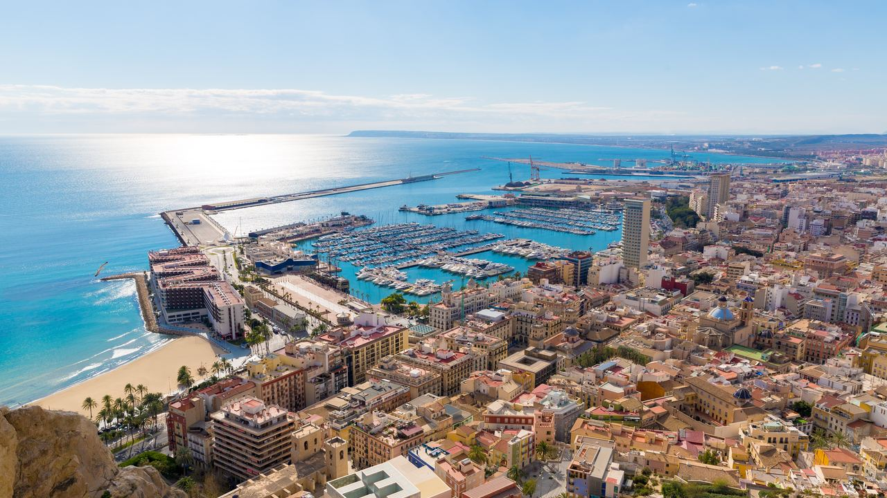
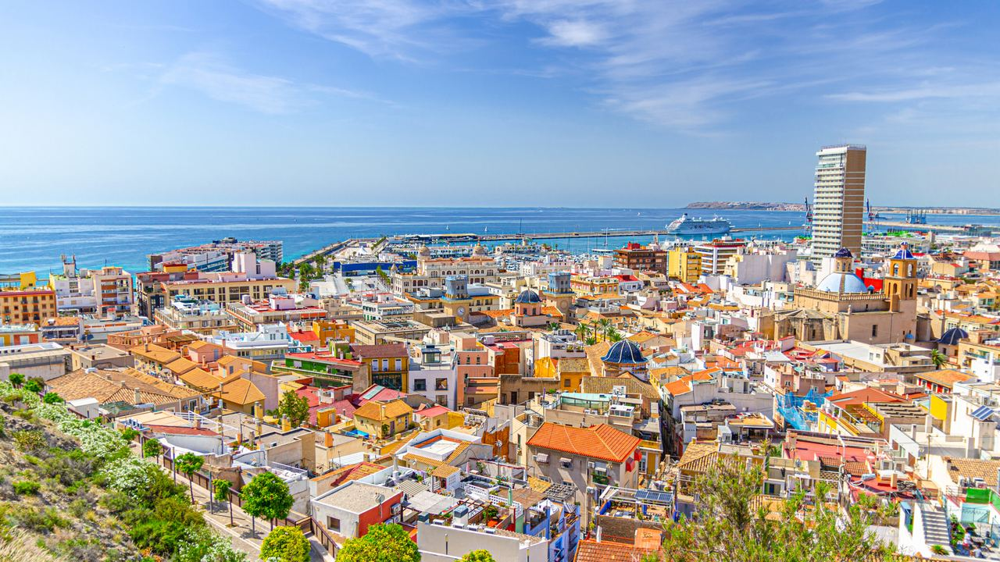
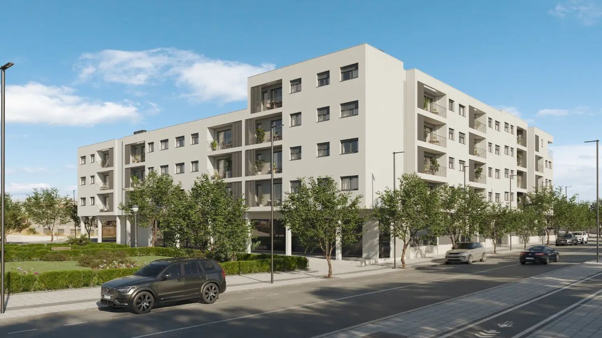
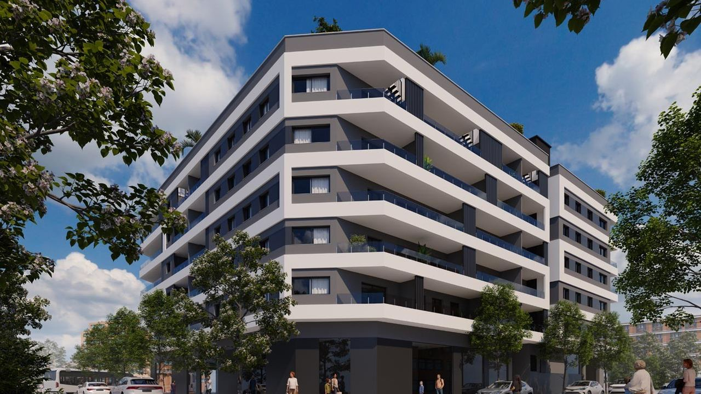
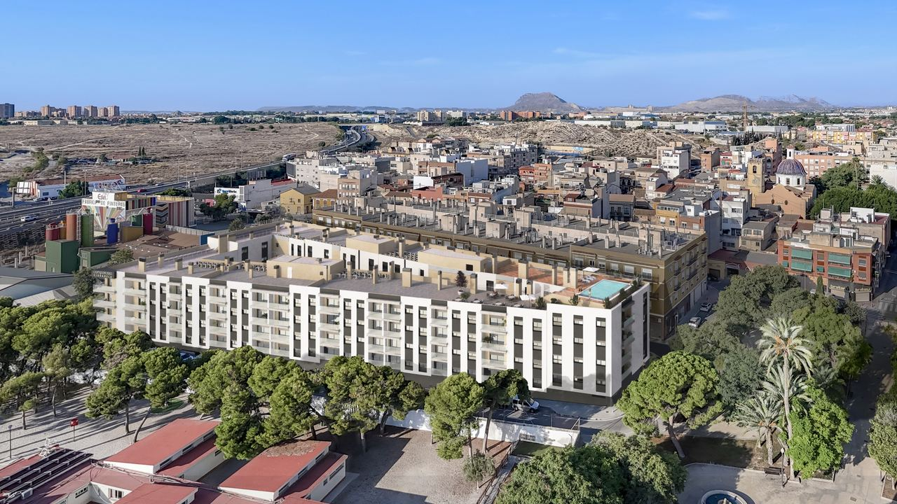

Buying in Spain · Alicante
New Developments in Alicante: Three Areas Worth Knowing
 By Aleksandra Kobus · · updated · 4 min read
By Aleksandra Kobus · · updated · 4 min read

In short: Alicante is a real city, not just a resort: it has an airport, a tram, a university, hospitals and a rental market that works all year. That is why new developments here are designed for everyday living as much as for holidays. Three areas show the range: Villafranqueza (quiet, north of the centre, the lowest prices), San Agustín (practical, close to schools and services) and Bulevar del Pla (central, on the tram, 2 km from the beach). In February 2026 apartments in our three featured projects started at €160,000, €256,000 and €284,000. Off-plan payments must be protected by a bank guarantee.
Alicante has changed a great deal in recent years. Once seen mainly as a place to land on the way to the beaches, it is now one of the most popular cities on the Costa Blanca to live in. Here are three areas with new developments, each suited to a different kind of buyer, and what to check before you choose.
Why buyers choose Alicante

- A complete city: international airport about 20 minutes away, a port, the TRAM network, the University of Alicante, large hospitals and a real job market.
- Demand all year: students, remote workers, local families and people relocating rent in Alicante in every season, not only in summer. See long-term rental.
- New builds for everyday life: many new developments have parking, storage, communal pools and gardens, and good insulation, which older city flats often lack.
For a buyer, the right neighbourhood matters more than the distance to the beach. Public transport, schools, health care and shops decide how pleasant a home is to live in and how easy it is to let.
Villafranqueza: quiet living north of the centre

Villafranqueza is an established residential area in the north of Alicante, calm and well planned, with fast road links (A-70 and A-77) and the University of Alicante close by. Albufereta beach is about 6 km away.
The development we featured has 102 apartments with 1 to 3 bedrooms, each with a parking space and storage room, and a panoramic rooftop pool. Completion is planned for April 2028, and in February 2026 prices started at €160,000, the lowest of the three. It suits buyers who want space and quiet and are happy to wait for the keys.
San Agustín: practical city living

San Agustín is one of Alicante's most practical districts, about 3.5 km from the beach and port, with schools, sports centres and everyday services close by. Its higher position gives open views over the city.
The development has 47 apartments with 1 to 4 bedrooms, with garage and storage included, plus a pool with solarium, a large garden, a children's playground and bicycle parking. It was due for completion in the second half of 2026, with prices from €256,000 in February 2026. It is a good fit for families who want city access without the busiest streets.
Bulevar del Pla: central, on the tram, near the beach

Bulevar del Pla is a modern part of the city with wide avenues, about 2 km from Postiguet beach. The TRAM takes you to the centre, the beach, the university and shopping centres in minutes, and several major hospitals are nearby.
The project has 55 apartments with garage and storage; the penthouses have private solariums. Shared areas include pools, gardens, terraces and social spaces. Completion is planned for late 2027 to early 2028, with prices from €284,000 in February 2026. See the current listing.
The three areas side by side
| Villafranqueza | San Agustín | Bulevar del Pla | |
|---|---|---|---|
| Best for | Quiet, space, long-term | Families, services | City life, no car needed |
| To the beach | about 6 km | about 3.5 km | about 2 km |
| From (Feb 2026) | €160,000 | €256,000 | €284,000 |
| Completion | April 2028 | Second half of 2026 | Late 2027 – early 2028 |
Availability changes quickly in new developments. Ask us for current units and prices.
What to check before buying off-plan
- Bank guarantee for every payment before completion, as required by law, and a building licence for the project.
- Payment plan: typically a reservation deposit, then stage payments during construction and the rest at completion.
- The individual apartment: floor, orientation, views and noise can differ more within one building than between projects.
- Timing: projects further from completion usually have better prices but need patience; nearly finished ones cost more but carry less risk.
- Costs on top: 10% VAT plus stamp duty, notary and registry. See how to buy in Spain and new build or resale.
Frequently asked questions
How much does a new apartment in Alicante cost?
In the three developments we featured in February 2026, prices started at €160,000 in Villafranqueza, €256,000 in San Agustín and €284,000 on Bulevar del Pla. Prices depend on size, floor and views.
Which area of Alicante is best for a new build?
It depends on how you live: Villafranqueza for quiet and value, San Agustín for families and services, Bulevar del Pla for a central location on the tram near the beach.
Is buying off-plan in Alicante safe?
Payments to the developer before completion must be secured by a bank guarantee or insurance. Ask for it with every payment and have a lawyer check the licences.
Is Alicante good for rental income?
Yes, especially for long-term and mid-term rentals, because students, workers and residents rent all year, not just in summer.
What costs are added to a new-build price?
10% VAT, stamp duty (1.4% in the Valencian Community), notary, land registry and legal fees.
Find your new home in Alicante
Tell us how you want to live and your budget, and we will send you current new-build options in Alicante with prices, plans and completion dates. Contact us.
Sources: TRAM d'Alacant – network and lines · Universidad de Alicante